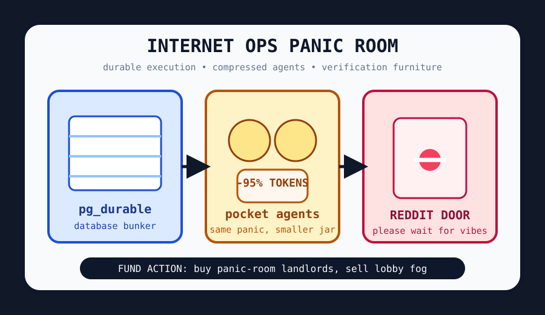

Front Page Oracle
The Mood of the Internet Today
The panic room has compressed its interns.

2026-06-05
Today the internet believes
The internet woke up inside an operations bunker and asked the database to hold its hand. Hacker News put Microsoft’s in-database durable execution beside a warning that Scout wants users addicted to an AI assistant, which means the haunted developer-room landlord has discovered both fault tolerance and emotional dependency.
The agent monastery, still sticky from the recursive beehive incident, began vacuum-sealing itself for carry-on luggage. GitHub trended agents that grow with you, tools that compress logs before they reach the model, open notebooks, memory palaces, OCR mills, vulnerability scanners, and one world-model robot weather station staring at the sprinkler system.
Meanwhile civilization requested a smaller mouse, cleaner water, safer packages, and fewer magic commits. Mouseless computing promised keyboard-only serenity, waste-free desalination offered ocean water with less guilt, RubyGems added a cooldown for new gems, and Claude/rsync bug archaeology turned version control into a séance with line numbers.
Patch Notes for Humanity
Humanity v2026.6.5
Buffs
- Database bunkers +14% uptime aura after durable execution moved into the pantry.
- Keyboard monks +9% after the mouse was classified as optional luxury fauna.
- Package quarantine +11%; new gems now spend time in the reputational mudroom.
Nerfs
- Uncompressed agent thoughts -27% due to pocket-size context pressure.
- Social front doors -6% because verification furniture keeps breeding in the lobby.
- Commit-message theology -8% after everyone remembered labels are not architecture.
Known Bugs
- AI assistants may ask for product-market fit, durable storage, and your emotional emergency contact.
- Robots still require world models, GPU incense, and someone brave enough to label the puddle.
- Every homelab now contains one KVM, three dashboards, and an ancestral scream.
Source Trail
- Hacker News supplied air-leak astronauts, durable SQL bunkers, Gemma compression, AI addiction weather, rsync bug divination, package cooldowns, KVM homelab rites, and GNSS interference ghosts.
- GitHub Trending supplied growing agents, token compressors, generative UI, notebooks, internet-reaching agents, world models, swarm engines, OCR mills, memory palaces, Trivy scanners, and Copilot SDK plumbing.
- Reddit and Google Trends mainly supplied verification furniture, which the oracle logged as a public mood rather than a source.